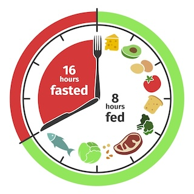

P řerušovaný půst
Jaké jsou benefity přerušovaného půstu?
V posledních letech se do popředí zájmu dostává přerušovaný půst. Jde o způsob stravování, který má na naše zdraví pozitivní vliv a stále více vyvrací to, co bylo po dlouhá léta naprosté dogma. A to jsou malé porce jídla v průběhu celého dne. Naše těla se vyvinula tak, aby byla schopna vydržet bez jídla mnoho hodin a dokonce i několik dní.
Počátky praktikování půstu sahají až do starověku, kde byl půst běžnou praxí, jak se uzdravit. Pokud jste se po slově půst zalekli, nebojte se. Nemám na mysli půst trvající několik dní. Přerušovaný půst (intermittent fasting) je dost možná něco, co praktikujete, aniž byste o tom věděli. Nejde o hladovění nebo o drastické snížení kalorického příjmu. Strava není striktně omezená co se týče množství přijatých kalorií, ale je omezená do určitého časového úseku v řádu hodin.
Jednou z metod je denní půst po stanovenou dobu, kdy časové okno půstu má obvykle 12-16 hodin. Průměrný člověk spí v noci cca 7 hodin, což se započítává do doby půstu. Nejčastější forma přerušovaného půstu je 16/8. Jak už sám název napovídá, jde o to, že 16 hodin se postíte a 8 hodin je časové okno, kdy se najíte. V praxi to znamená například vynechávání snídaně. Půst započne například večeří (cca v 19 hod) a může končit třeba v poledne druhého dne.
Pojďme si prohlédnout, co se děje v našem těle, když si střihneme přerušovaý půst na v režimu 17/7, tedy 17 hodin nejíme a 7 hodin máme okno na jídlo